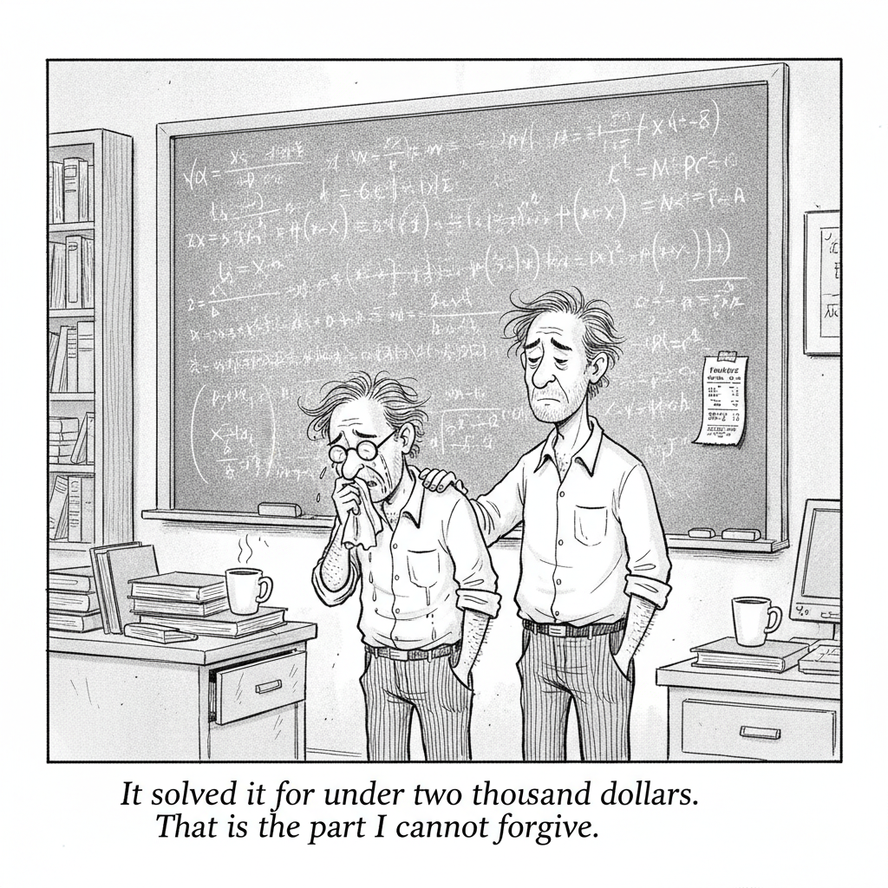

Your daily AI news digest
AI the News That's Fit to Prompt
Three open letters landed close enough together that Simon Willison collected them in one post, and the third is the one that matters. "Pacing the Frontier" carries 1,324 signatures from employees at frontier AI companies, Dario Amodei and Ilya Sutskever among them, and asks governments to help "deliberately pace the frontier of automated AI development." The letter notes, as its own evidence, that companies like Anthropic now produce roughly 80% of their code with Claude Code.
Read that pairing slowly. The people building the recursion are asking outside authority to put a governor on it, and the reason they give is a number about their own workflow. This is not a safety-institute white paper or an academic petition. It is a request from inside the building, and the request is for a constraint the signatories cannot impose on themselves, because no single company can slow down while its competitors do not.
The other two letters run the opposite way on a different axis. Microsoft shepherded "Open Weights and American AI Leadership," signed by 235 companies including NVIDIA and OpenAI, arguing that open weights improve safety by exposing models to community scrutiny. Anthropic responded separately, raising authoritarian access, cyberattack capability, and distillation. Nobody is arguing about whether the frontier is moving fast. They are arguing about which release model is the safer place to be standing when it does.

"It solved it for under two thousand dollars. That is the part I cannot forgive."
Sam Altman Is Still Making the Case for Parenting via ChatGPT
The pitch was ChatGPT Work generating a personalized podcast for the family car ride, assembled from a connected calendar and a child's interests. The reply that stuck came from animator Alex Hirsch: "What if you just talked to your children." It drew 122,000 likes against Altman's 9,600, which is a twelve-to-one verdict on a product suggestion from the person best positioned to know what the product can do. The word "still" in the headline is doing work; this is not the first time he has made the case, and the reception has not improved. Set it beside Greg Brockman's observation elsewhere in this issue, that people resent task requests routed through a Slack bot but not the same request from a colleague, and a pattern emerges. The industry keeps proposing that AI mediate relationships, and people keep saying the relationship was the point.
Ten Advances in Mathematics, at Under $2,000 Each
Willison's read on OpenAI's claim adds the number the announcement buried. The ten problems, each with "no progress on the main result for at least a decade," were reportedly solved at under $2,000 apiece in GPT-5.6 Sol token prices. OpenAI published Lean 4 formalizations and papers describing the solutions, which is the right move, but it did not publish the prompts, which is the part a reproducer would need. He also relays mathematician Kirwin Hampshire's description of the moment as "a profound spiritual crisis" for the discipline. The formalizations make these checkable. That checking has not happened yet.

As Reddit Stock Falls, CEO Questions the Value of Google's AI Overviews
Steve Huffman put it plainly on the earnings call: "10 blue links has driven tremendous value and growth to the broader ecosystem... AI Overviews has yet to make a similar level of positive impact," and "as businesses, publishers, retailers, we're still looking for that win-win." Reddit's roughly $60 million Google licensing deal may be on the chopping block per the Wall Street Journal, with The Economist, Reuters, Politico, and USA Today weighing the same question. A Pew study of 900 US adults found AI Overviews cut referrals nearly in half; Google calls the methodology "flawed" and says organic clicks have been "relatively stable year-over-year." The company selling the training data is now the company asking what it bought.

Is This Billboard Hot 100 Hit AI Slop?
Fenix Flexin's "Rubberz" sits at number 58 on the Hot 100 while the internet argues about whether a machine made it. He denies it. Switched on Pop's Charlie Harding hears the artifacts: "Ghostly backing vocals duck in and out unexpectedly. The drum reverb is full of unnatural digital artifacting reminiscent of a 64kbps MP3 downloaded off of Napster." The detectors disagree with the ears. Five AI music tools put the track at only 20 to 30 percent likely synthetic, while the cover art and a celebratory social post were flagged AI-generated at over 97 percent certainty, and writing detectors flagged the lyrics. The useful finding is the gap: detection works on images and text and does not yet work on audio.

After Noise Complaints, a Judge Orders Waymo to Stop Charging Overnight
Los Angeles Superior Court Judge Bradley S. Phillips granted Santa Monica a preliminary injunction in its public nuisance suit, barring Waymo from running its charging lots at 12th and Euclid between 11 pm and 6 am. The complaint is not about safety or jobs or displacement. It is about light, traffic, and a sound. Neighbor Christopher Potter wrote that "the constant 'beep beep beep' sound as the autonomous vehicles back out of their spaces... is an incessant disturbance that hinders both our tranquillity during the day and our peace during the night." Nuisance law is old, local, and indifferent to how advanced the nuisance is. It may be the most reliable regulator autonomy has met.

Judge Denies xAI's Request to Block Minnesota's 'Nudify' App Ban
U.S. District Judge Donovan Frank refused xAI a preliminary injunction, and Minnesota's ban on nudification apps took effect August 1. The timing did the company no favors: the judge noted xAI filed "nearly three months after the law was signed, and only three days before the law is set to take effect." The case continues, with xAI arguing the ban is "overinclusive" and offering less restrictive alternatives. Filing at the last minute is a tell about how seriously the deadline was taken, and courts read it that way.

YouTuber Hank Green Says His AI Usage Is 'Not Healthy'
Green, 3.2 million subscribers, apologized after viewers noticed ChatGPT in his script-writing, and the apology went somewhere more interesting than the disclosure. "The level of dopamine that I've been getting from interacting with LLMs... is not healthy for me or good for the world." He says he will cut his output and return to more personal work. The confession is not about accuracy or credit. It is about compulsion, from someone whose job is producing at volume, which is exactly the population most exposed to a tool that makes producing at volume feel effortless.

SpaceAI Could Be Southeast Asia's Edge Against El Niño, if Governments Actually Use It
NOAA puts the odds of a very strong El Niño before the end of 2026 at 63%, potentially rivaling the 1997-98 event that killed roughly 22,000 people and cost $36 billion. The authors argue satellite imagery plus AI can forecast the damage well enough to blunt it, then make the harder point: the region already has enough climate data. What it lacks is "timely, trusted decisions." This is the least glamorous failure mode in AI and the most common one. The prediction problem is close to solved and the acting-on-the-prediction problem has not been started.
Loan Investors Are Pushing Back as Fear Rises
Leveraged loan investors are negotiating on terms for the first time in years, which raises borrowing costs for private equity and for heavily indebted AI companies alike. At least four borrowers had to sweeten terms this week to clear the market, among them the AI cloud provider CoreWeave and the cybersecurity firm Proofpoint. The diagnosis is volume: money managers are being overwhelmed by how much debt is hitting the market as tech firms push hundreds of billions into AI infrastructure. Nothing has broken. The buyers simply stopped taking whatever was offered, and that is usually the first thing that changes.

A 3D-Printed Cycloidal Gearbox, With the Generator Script
A palate cleanser with real numbers in it. Version 3 of Tom Ilan's cycloidal gearbox is the fully functional one: 1:9 ratio on a NEMA 17 motor, 9 cm across, 66% efficiency at 1.3 N·m of torque. The repo ships a Python script that generates custom designs from parametric equations derived from SolidWorks methodology, with pin count, eccentricity, and print-tolerance offsets all adjustable. It is a reminder that the parametric-design-plus-cheap-fabrication loop has been quietly compounding this whole time, without a single press release.

"ChatGPT 5.6 Is a Dumber Model. I Love It."
Jones is precise about the provocation. "Dumber does not mean dumb. Not remotely. Soul is an incredibly intelligent model. On Agent's Last Exam, which measures long running professional work across 55 different fields, Soul set a new high." What he means by dumber is the absence of the big-model feel, the between-the-lines reading you get from a very large pre-trained model. Two axes, moving in opposite directions, in the same release. That distinction is worth more than most benchmark tables.

Hidden Codex Setting
A forty-second short on a Codex configuration option most users never find. Berman's channel does the long-form AI coverage, and these clips are the offcuts, but the genre is telling: the tools now ship with enough surface area that undocumented settings are their own content category.
Five by five. Issue 2026‑08‑02.
Across
- 1. Bring an AI's behavior in line with human values
- 4. Software that acts on your behalf
- 5. Group of eight (as in bits in a byte)
Down
- 2. Formal reasoning, symbolically
- 3. Lamp dweller who grants wishes
AI Isn't a Catch-All Trade for Stocks This Earnings Season
Bloomberg on the end of the phase where saying "AI" moved a share price. Investors are now sorting by whether the spending shows up in results.
AI Filmmaking Is a Financial Lifeline, Not a Creative Comeback
The argument is that for some filmmakers AI is less a creative revolution than a way to package themselves as disruptors and reach capital that has otherwise dried up. When backers fund the technology rather than the film, they risk mistaking a funding mechanism for a reason anyone will watch.
A Quote From Greg Brockman
OpenAI's president observes that employees dislike getting task requests from an AI chatbot in Slack even when they would happily do the same favor for a coworker who asked. His conclusion is that people want AI that "enhances time together" rather than inserting itself between them.
Release: datasette-apps 0.2a0
Two new tools for Datasette Agent: app_debug(), which tests apps by running JavaScript inside a hidden sandboxed iframe styled with opacity 0 and pointer-events none so smoke tests run invisibly, and app_list() for enumerating editable apps.
Simon Willison's July 2026 Newsletter
The month in one place: the accidental cyberattacks at OpenAI and Anthropic, the GPT-5.6 variants and Claude Opus 5, and the MCP tooling churn. Sponsors get it a month before the free copy, at $10/month.
We Need to Quarantine Aliens on the Moon, Scientists Propose
A proposal for a lunar biocontainment facility to hold extraterrestrial samples before anything reaches Earth, on the grounds that alien organisms could have "atypical biochemistry." The cost, the authors argue, "is negligible compared to the potential ecological devastation of an invasive extraterrestrial organism." File under containment, which is this issue's other recurring theme.